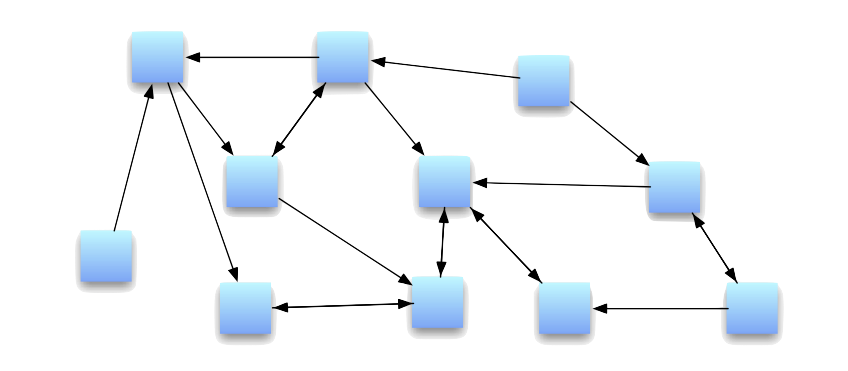
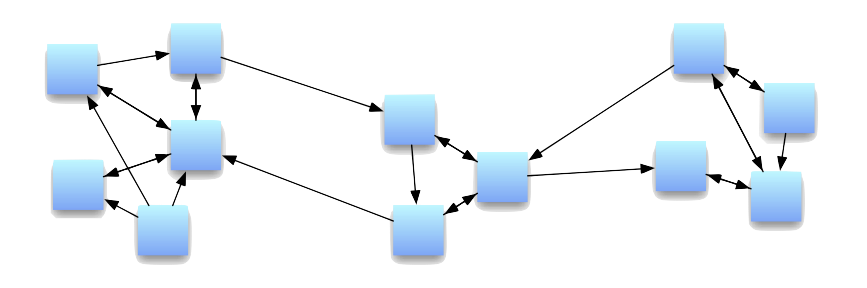
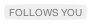
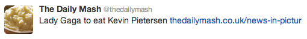
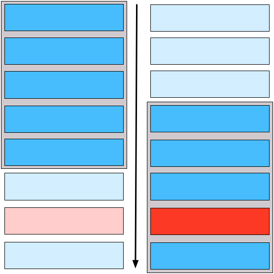
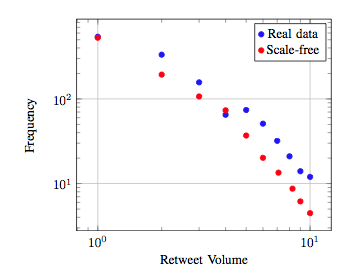
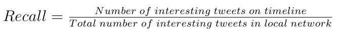
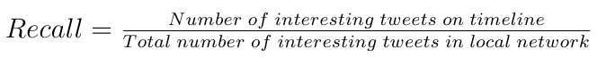

Retweets and stuff
Will Webberley
September 10th, 2012
The talk
- Brief introduction
- Recent work
- What results mean
- Where next?
Recent questions
- Interested in propagation characteristics in different network structures
- Does a network (as well as a tweet) have a quality?
- Can we calculate a network's quality from the retweet characteristics?
- Can we then use this to reverse engineer a tweet's quality?
Comparing network types
First thing to find...
Does the network structure affect propagation?
How to check this?
Use a model to simulate tweet propagation in a network
Simulate 3 different network types
And hopefully get different results from each using the same tweet
Random network

- Many avenues for propagation
- All users have around the same in- and out-degree
Scale-free network

- Some dense clusters of users
- Only some users have good links to external communities
Model
-
- Network
- Trained regression
- Tweet
-
- cardinality of output set
- sum of followers of output set
Training the model...
Model trained using set of tweet and user features
Feature examples
-
-

-

-

Data for this experiment
- Twitter walk using REST API between March-June 2012
- ~15,000 (usable) retweets collected
- User and tweet features extracted from this
Tweet timeline

- Tweets below view-window less likely to be seen
- If browsing quickly, then less likely to scroll down far
- Interesting tweets may be missed
How to include this?
- Remove non-retweeted tweets from the user's timeline after t timesteps
Comparison to real Twitter data

Precision and recall
 

- For a best experience, maximise both
- Random network may increase recall, but
reduces precision
- In practice, hard to maximise recall
Summary of this
- Different networks have different propagation characteristics
- Therefore, there must be an optimal structure
- Scale-free most Twitter-like in terms of propagation
- How do we get interesting content to the right people?
Coming up
- Work out the interesting tweets using the model outputs
- If we know how much a tweet is predicted to spread
(based on features), we can tell if it is actually interesting or not
For example...
- A tweet (with its features) has been predicted
to be retweeted 6 times...
- It is actually retweeted 15 times
- This tweet is therefore significantly interesting
Issues with this
- Deciding on how to measure a network (size, density, etc.)
- Scaling the network measurement to the user's local network
- Deciding on a threshold to determine (un)interesting-ness
Conclusion
- Wanted to find how non-tweet factors affect propagation
- Discovered that network structure has large impact on this
- Can we now determine a tweet's interesting-ness based on this?
The end
Any questions or comments?
except Quinn